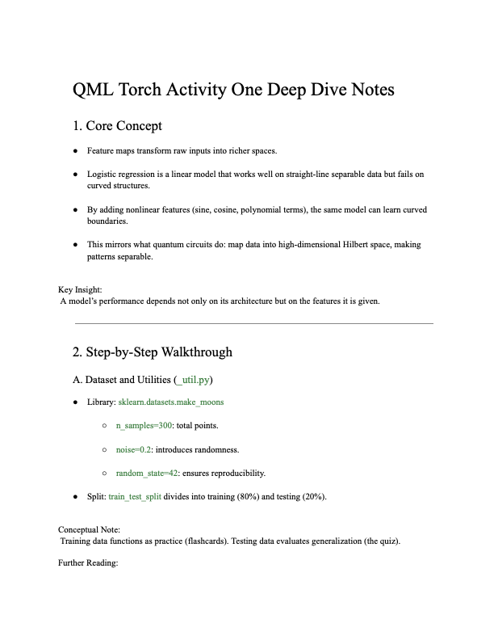

Date: September 17, 2025

Activity One begins with a classical machine learning problem so students can understand the purpose of a feature map before seeing a quantum circuit. A logistic-regression model can separate data with a straight boundary, but it struggles with curved structures such as the two-moons dataset. Transforming the inputs into a richer feature space can make those patterns separable without changing the final classifier.
The activity uses a reproducible train-test split, visualization utilities, feature-map choices, standard scaling, and logistic regression. Students compare the original two features with a quantum-inspired map containing sine, cosine, interaction, and polynomial terms. They can then create a custom map and inspect how the decision boundary changes.
The notes record approximately 80 percent accuracy for the classical mode and approximately 95 percent for the quantum-inspired mode in the example run. The point is not that the transformation proves quantum advantage. Instead, it demonstrates the representation lesson that motivates quantum feature maps: performance depends on the space in which a model receives the data.